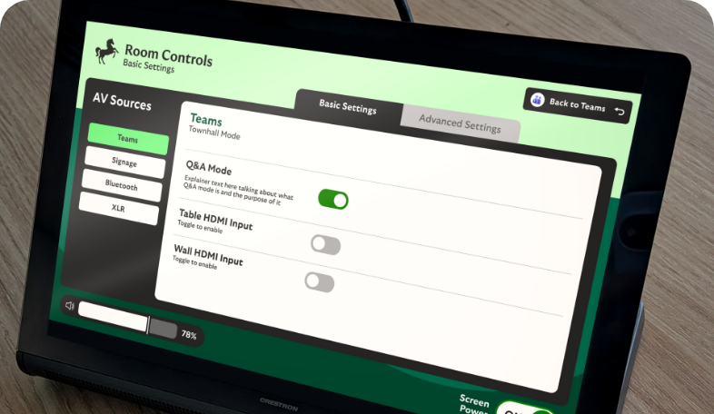
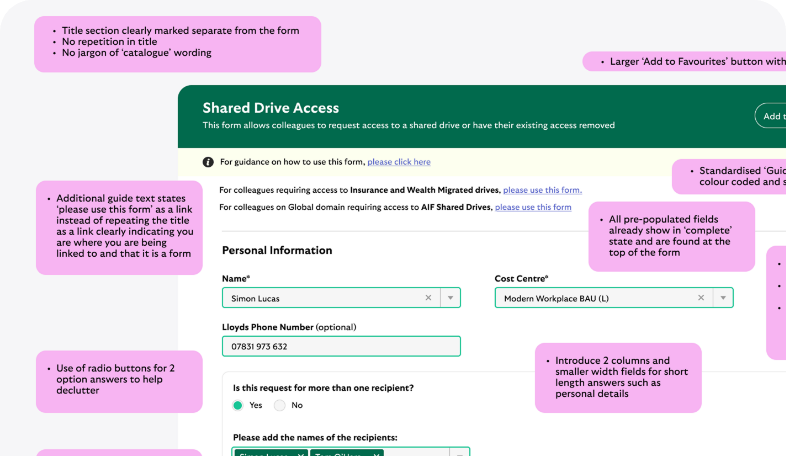
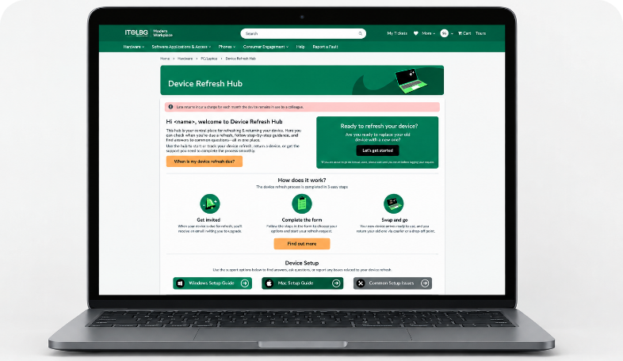

Events UI Panel
This study looks into Improving the usability and consistency of the touchscreen interface, making complex AV functionality simpler and more intuitive for users.
Find out more
This study looks into Improving the usability and consistency of the touchscreen interface, making complex AV functionality simpler and more intuitive for users.
Find out more
This study looks at a structured way to identify and categorise IT Form problems, recommend improvements, and translate the findings into reusable guidance for designing better IT forms.
Find out more
This study investigates the current Device Refresh Hub and supporting journey looking to create a simpler experience that helps colleagues understand their refresh status, find relevant information and know what to do next.
Find out more